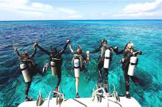
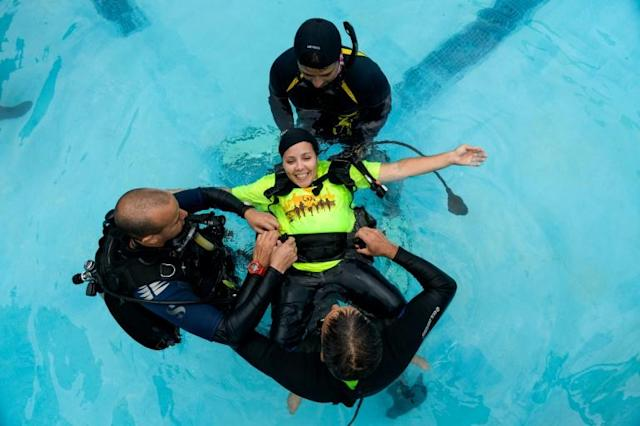

Acompáñanos a descubrir las maravillas submarinas
Las inmersiones en el mundo marino es una de las experiencias mas espectaculares que podrás vivir, desplazarte a través de corales de hermosas formas, y un desfile de fauna marina de variedad de especies, tamaños y colores que te invitan a compartir su entorno y experimentar lo maravilloso del ambiente submarino.
Robert Wayland, artista y conservacionista estadounidense, autor de la imagen a la derecha lo citó de esta manera:
"El océano conmueve al corazón, inspira la imaginación y proporciona alegría eterna al alma".

Asi que, si quieres vivir una experiencia única, en un ambiente que conforma mas del 80% del planeta, hogar aproximadamente de 1 millón de especies registradas (flora y Fauna), sentir lo que es la ingravidez, desplazarte literalmente en 3 dimensiones con personas que aman y respetan la naturaleza; estás en el lugar indicado para los primeros pasos en esta gran y hermosa aventura.
Algunas de las cosas buenas que disfrutarás
Nuevos Amigos
Personas que comparten tu gusto por el mar
Sitios Mágicos

Hermosos arrecifes y corales para disfrutar tu estadía sumergida. Además de pecios, cenotes y muchos sitios mas
Personal Calificado
Contaras con personal de instrucción y apoyo calificado